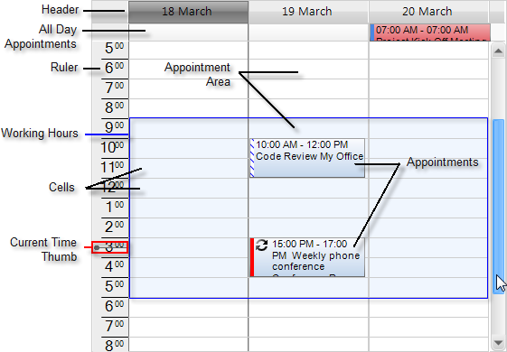
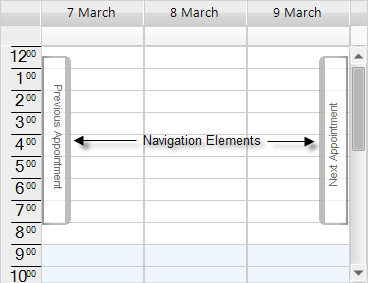
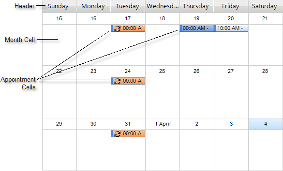

Overview and Structure
Overview
| [Using RadScheduler for WinForms](http://tv.telerik.com/winforms/radscheduler/scheduler) Have you had a need to build scheduler functionality into your applications? If so, then this webinar is for you, where Telerik Evangelist John Kellar shows a variety of features like iCal support, multiple view options, strong data binding support, and an out of the box appointment dialogs. (Runtime: 32:46) |  |
A first-rate scheduling component should offer intuitive, simple, and familiar interface, to help the user review all events in
a fast and efficient manner. Telerik Windows Forms Scheduler provides simplistic, but powerful interface, following closely
the established UI standards.
The structure of the RadScheduler control varies slightly, depending on the view type. When the view type changes,
the main ViewElement of RadScheduler is also changed. The view element for
Day,
MultiDay,
Week, and
Work Week
views is the same - SchedulerDayViewElement. This ensures simplified deployment, much better flexibility and saves the need to write
or modify the logic behind all the different view types. Added to that, you can set your preferences from one
place to apply to all views. The Month
and Timeline Views use a different
presentation elements – SchedulerMonthViewElement and SchedulerTimelineViewElement respectively.
All view elements inherit from the base SchedulerViewElement type, which defines common methods and properties for all views.
The current view element can be accessed via the ViewElement property of RadScheduler.
RadScheduler also provides grouping by resource mode in which appointments for several resources (e.g. rooms, employees, etc.)
are displayed simultaneously on a single view. In this case the view element is one of the following: SchedulerDayViewGroupedByResourceElement,
SchedulerMonthViewGroupedByResourceElement, TimelineGroupingByResourcesElement which contain a collection of SchedulerDayViewElements,
SchedulerMonthViewElements and SchedulerTimelineViewElements correspondingly. All grouped views inherit from the base type
SchedulerViewGroupedByResourceElementBase.
Structure of Day, MultiDay, Week, and Work Week views
RadScheduler displays all of its events in a Time table. The time table consists of:
The top of the scheduler is the Header and displays dates that appointments can be created in.
Below the Header are the All Day Appointments that have no specific duration in hours__.__
Underneath the All Day Appointments is the Appointment Area that contains any
number of Appointments.In the left border of the scheduler is the Ruler area. The current time is marked within the ruler by
the Current Time Thumb. The default scale of the ruler can be set with a single property to any of the predefined values,
or the user can select a new scale by simply right-clicking in the time ruler and selecting the preferable setting;Workday hours can be specified within the timeline to make it easier for
end-users to carry out scheduling. They are properly indicated by a lighter color, similar to Microsoft Outlook.Current Day is highlighted in most scheduler views for a better visual presentation.

- In addition, Navigation Elements let the user jump forward or backwards to the nearest appointment.

Structure of Month View
The Month View
of the scheduler simply has a Header, Month Cells for every day in the month
and zero or more Appointment Cells in each month cell.

Structure of Timeline View
The Timeline View
of the scheduler has a Header, Columns (scales) and Appointment Cells:

The supported scales can be set to any of the predefined values, or the user can select a
new scale by simply right-clicking in the time table and selecting the preferable setting from the context menu.
Year
Month
Week
Day - this is the default value
Hour
15 minutes.
Scheduler Navigator
A Scheduler Navigator
control can be placed at the top of the scheduler for easy navigation between the different views and dates;